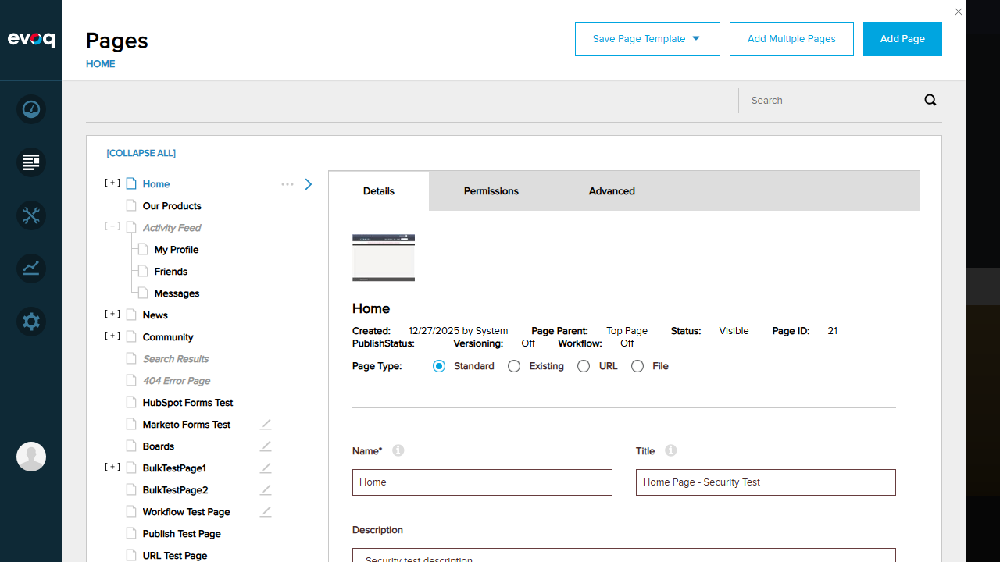
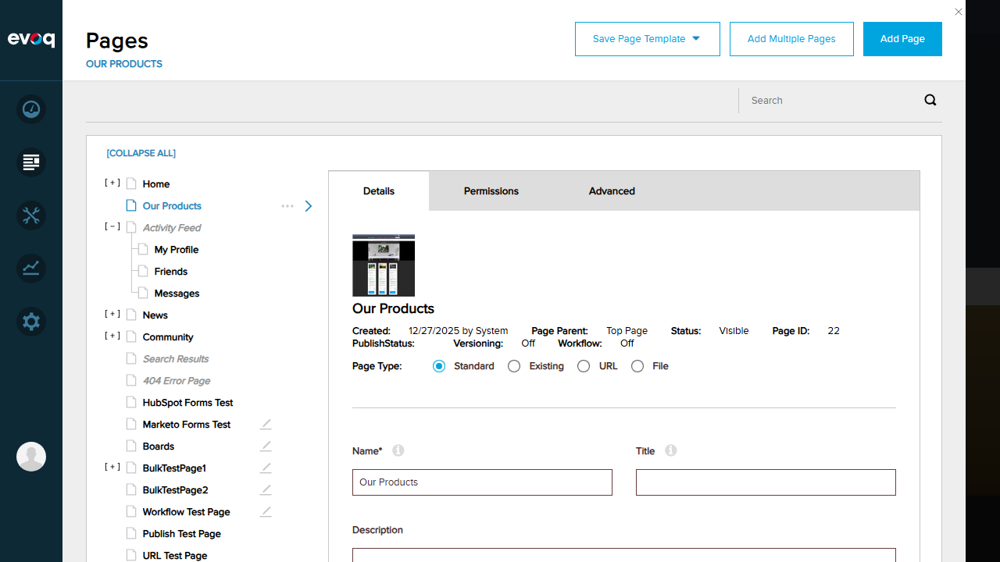
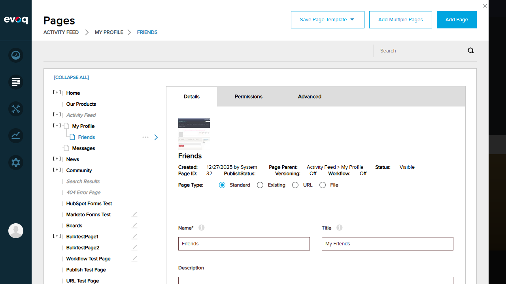
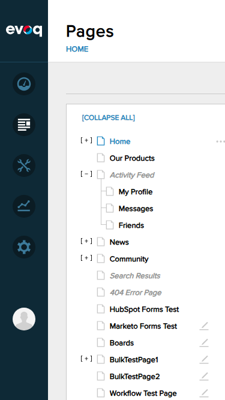
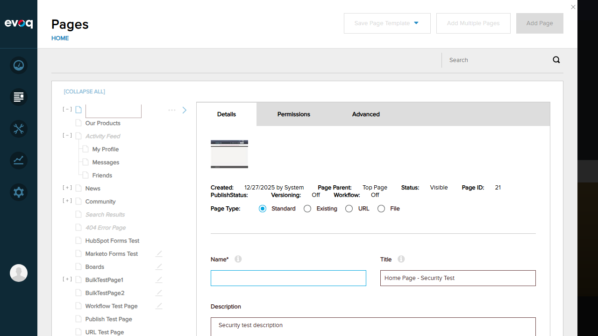
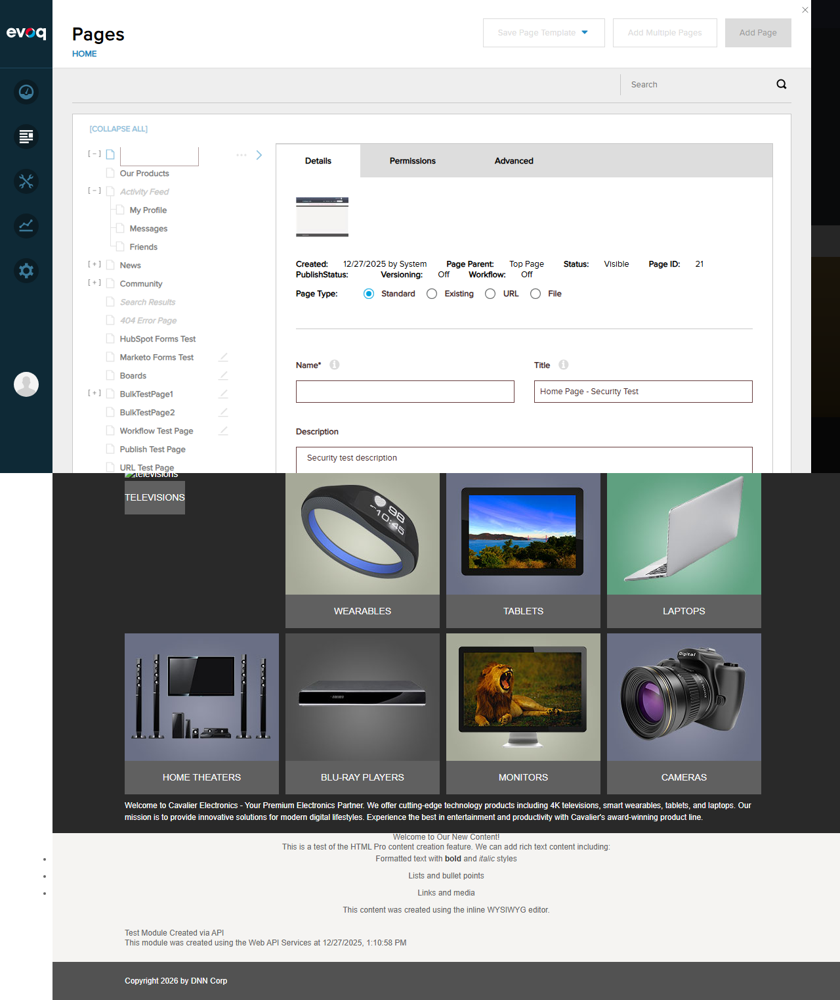
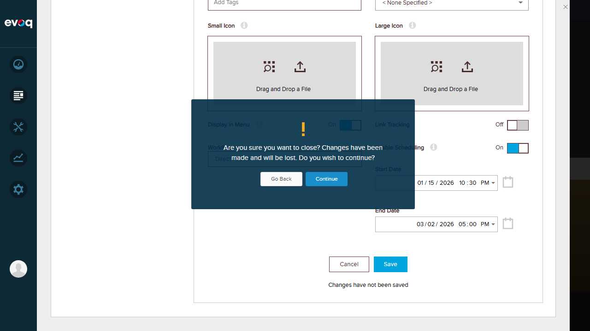

Client-side page management interface with React components
Extension
Evoq.PersonaBar.Pages
Priority
High
UI Location
Admin > Content > Pages
Test Date
January 6, 2026
Test Summary
Test Scenario
Status
Page Tree Rendering
PASS
Drag and Drop Functionality
PASS
Mobile Responsiveness
PASS
Real-time Updates
PASS
Error Handling in UI
PASS
Loading States
PASS
Overall Result: 6/6 Tests Passed
Test Scenario 1: Page Tree Rendering
Status:PASS
What was tested: Verification that the page tree displays correctly with hierarchical structure, expand/collapse functionality, and page selection updates.
Steps Taken:
Navigated to Admin > Content > Pages
Verified page tree displays with proper hierarchy (Home, Our Products, Activity Feed with children, etc.)
Tested EXPAND ALL / COLLAPSE ALL functionality
Selected a page and verified details panel updates
Screenshots:
Initial page tree view showing hierarchical structure

Page tree with all nodes expanded

Page selection with details panel update
Result: Page tree renders correctly with hierarchical structure. Expand/collapse works properly. Page selection updates the details panel in real-time.
Test Scenario 2: Drag and Drop Functionality
Status:PASS
What was tested: Ability to drag pages to new locations within the page hierarchy.
Steps Taken:
Selected "Friends" page under Activity Feed
Dragged "Friends" page to "My Profile" (making it a child)
Verified success message appeared
Restored the page to original location using Parent Page dropdown
Screenshots:

Success notification after drag and drop operation
Result: Drag and drop functionality works correctly. Pages can be moved within the hierarchy and the operation provides visual feedback with success messages.
Test Scenario 3: Mobile Responsiveness
Status:PASS
What was tested: UI adaptation to smaller viewport sizes (mobile device simulation).
Steps Taken:
Resized browser to 375x667 (iPhone SE dimensions)
Verified PersonaBar collapsed to icon-only mode
Confirmed page tree remained functional
Tested navigation to home page at mobile size
Restored browser to 1280x720
Screenshots:
PersonaBar in mobile view with collapsed sidebar

Home page rendered in mobile viewport
Result: UI properly adapts to mobile viewport. PersonaBar collapses to icons-only mode. Page tree remains functional at smaller sizes. Content displays appropriately.
Test Scenario 4: Real-time Updates
Status:PASS
What was tested: UI updates in response to user actions without page reload.
Steps Taken:
Verified page tree updates when pages are moved (drag and drop)
Confirmed details panel updates when different pages are selected
Tested that changes are reflected immediately in the UI
Verified page hierarchy changes without full page reload
Result: Real-time updates work correctly. The UI uses React/Knockout.js to update components without requiring page refreshes. Page tree, details panel, and hierarchy changes all update in real-time.
Test Scenario 5: Error Handling in UI
Status:PASS
What was tested: UI error handling for validation errors and user confirmation dialogs.
Steps Taken:
Selected "Home" page and cleared the required Name field
Clicked Save button to trigger validation
Verified error notification "Tab Name is Empty" appeared
Clicked Cancel button
Verified confirmation dialog appeared asking about unsaved changes
Clicked Continue to discard changes
Verified page name restored to "Home"
Screenshots:

Name field cleared, showing "Changes have not been saved" status

UI state after validation error (Name field empty)

Confirmation dialog when canceling with unsaved changes
Result: Error handling works correctly. Validation errors display appropriate messages ("Tab Name is Empty"). Unsaved changes trigger confirmation dialogs. UI provides clear feedback about the current state.
Test Scenario 6: Loading States
Status:PASS
What was tested: UI transitions and data loading behavior.
Steps Taken:
Used the search feature to search for "Test"
Verified UI transitioned to "Page Search Results" view
Verified results show thumbnails, page details, and metadata
Used "BACK TO PAGE" to return to normal page tree view
Confirmed smooth transition back to page tree
Screenshots:
Search results showing 21 pages found with detailed view
Result: Loading states and transitions work correctly. Search operations execute smoothly and display results with proper formatting. Navigation between views (page tree <-> search results) is seamless.
Observations
XSS Protection: The page tree displays HTML-encoded script tags (<script>alert('XSS')</script>) as text, demonstrating proper XSS protection in the UI.
Page Thumbnails: The code references a thumbnail system (dnn.dnnPageThumbnails) that generates page preview images, visible in search results and page details.
Workflow Integration: The UI shows workflow status (Direct Publish, Content Approval) and versioning information for pages.
React/Redux Architecture: The codebase uses React components with Redux for state management (ContainerWorkflowForMultiplePages.jsx, ContainerLinkTrackingForMultiplePages.jsx).
Mobile Support: Code includes initMobile and loadMobile functions for mobile-specific initialization.
Scheduling Features: Date pickers for Start Date and End Date enable scheduling of page visibility.